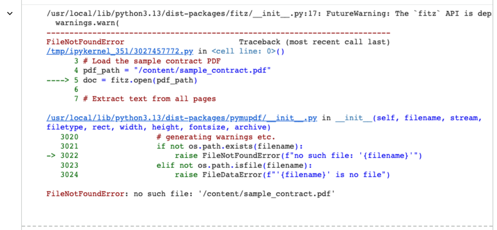
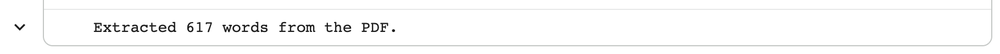
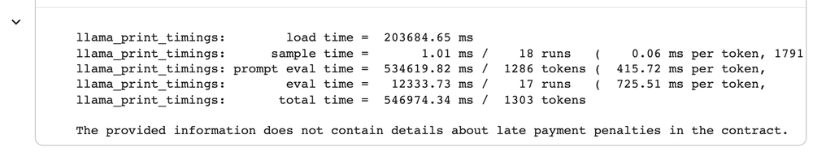

In the last reading, you ran the top half of the Extern expert's notebook, RAG with Open Source models, up to the question about RAG. Now you'll run the rest, under the heading Integrating Open-Source LLMs into RAG.
sample-sdf-document (Project 6).pdf.This notebook doesn't use Gemini, so you don't need your API key.
His notebook was written in March 2025. On today's Colab it still works, but two cells are slow. Nothing on screen says why, so here's what our run showed:
If a cell is still running, it hasn't frozen. Keep the Colab tab open and read the next slides while you wait.
Press Run on the cell that starts with !pip install pymupdf:
!pip install pymupdf!pip install llama-index-llms-llama-cppWhat this code does:
pymupdf (imported as fitz) helps us open and read our PDF.llama-index-llms-llama-cpp is the connector that lets LlamaIndex use Mistral through llama-cpp-python, the engine you installed in the last reading.Expect about 10 minutes. The next slide shows what you'll see.
What you'll see in Colab:
Successfully installed onnxruntime-1.32.0 pymupdf-2.1 pymupdf-layout-2.1 pymupdf4llm-2.1
Collecting llama-index-llms-llama-cpp
Downloading llama_index_llms_llama_cpp-0.8.0-py3-none-any.whl.metadata (4.2 kB)
Collecting llama-cpp-python<0.4,>=0.3.0 (from llama-index-llms-llama-cpp)
Downloading llama_cpp_python-0.3.37.tar.gz (80.9 MB)
Building wheels for collected packages: llama-cpp-python
Building wheel for llama-cpp-python (pyproject.toml) ... done
Created wheel for llama-cpp-python: filename=llama_cpp_python-0.3.37-py3-none-linux_x86_64.whl size=28231441 sha256=35d01aef01db41a9e9fe9f751433a56833c5e045b03d2926afa635b77cf75694
Successfully built llama-cpp-python
Attempting uninstall: llama-cpp-python
Successfully uninstalled llama_cpp_python-0.2.90
Successfully installed llama-cpp-python-0.3.37 llama-index-llms-llama-cpp-0.8.0The connector needs a newer llama-cpp-python, so pip downloads its source code (the .tar.gz file), builds it, and removes the old one. The cell sits on Building wheel for about 10 minutes. When Successfully installed appears and the cell has a green tick, move on.
Press Run on the cell that starts with !pip install llama-index-embeddings-huggingface:
!pip install llama-index-embeddings-huggingfaceWhat this code does:
What you'll see in Colab:
Collecting llama-index-embeddings-huggingface
Downloading llama_index_embeddings_huggingface-0.9.0-py3-none-any.whl.metadata (459 bytes)
WARNING: huggingface-hub 1.33.0 does not provide the extra 'inference'
Downloading llama_index_embeddings_huggingface-0.9.0-py3-none-any.whl (8.9 kB)
Successfully installed llama-index-embeddings-huggingface-0.9.0The yellow WARNING line is safe to ignore: it names an extra part of a library this notebook doesn't use.
Now, we'll load the supplier file using PyMuPDF (fitz). Upload the supplier PDF to Colab (Files panel on the left) before you run the next cell.
sample-sdf-document (Project 6).pdf, the file you downloaded on slide 1.Keep the file's name exactly as it is, with the space and the brackets. The code on slide 9 opens a file with that exact name.
Press Run on the cell that starts with import fitz # PyMuPDF:
import fitz # PyMuPDF# Load the sample contract PDFpdf_path = "/content/sample_contract.pdf"doc = fitz.open(pdf_path)# Extract text from all pagestext = "\n".join([page.get_text() for page in doc])print(f"Extracted {len(text.split())} words from the PDF.")What this code does:
fitz.open(pdf_path) opens the PDF named in pdf_path.text.His notebook cell still opens /content/sample_contract.pdf, a contract file left over from an earlier version of this course. You don't have that file, so this cell stops with an error. That's expected. The next slides show it and how his page fixes it.
What you'll see in Colab:

(opens the picture full size in a new tab)FileNotFoundError: no such file: '/content/sample_contract.pdf' means Python looked for a file with that name and didn't find one.FutureWarning above it says the name fitz will be replaced by pymupdf one day. It's harmless today.His Integrating page gives this version of the same cell, with the supplier file's name. Hover under the cell with the error, click + Code to add a new cell, paste this code into it, and press Run:
import fitz # PyMuPDF# Load the sample SDF PDFpdf_path = "sample-sdf-document (Project 6).pdf"doc = fitz.open(pdf_path)# Extract text from all pagestext = "\n".join([page.get_text() for page in doc])print(f"Extracted {len(text.split())} words from the PDF.")What you'll see in Colab:

(opens the picture full size in a new tab)text now holds all 617 words of the supplier file. If you see the yellow FutureWarning here too, it's harmless.
Next is one long cell. This slide shows its first half, and the next slide the rest. Read both, then run it.
from llama_index.core import VectorStoreIndex, Document, get_response_synthesizerfrom llama_index.core.retrievers import VectorIndexRetrieverfrom llama_index.core.query_engine import RetrieverQueryEnginefrom llama_index.core.settings import Settingsfrom llama_index.llms.llama_cpp import LlamaCPPfrom llama_index.embeddings.huggingface import HuggingFaceEmbedding# Configure the LLMllm = LlamaCPP( model_path="/content/mistral.gguf", temperature=0.7, max_new_tokens=512, context_window=2048, model_kwargs={"n_gpu_layers": 1})What this code does:
LlamaCPP, the connector you just installed.LlamaCPP loads the Mistral file you downloaded in the last reading, /content/mistral.gguf.temperature=0.7 sets how much chance goes into Mistral's word choice. max_new_tokens=512 is the longest answer it may write, in tokens (small pieces of words). context_window=2048 is the most text it can read at one time.n_gpu_layers asks to put 1 of the model's 33 layers on the GPU. With his install, nothing goes to the GPU, so this line changes nothing today.Press Run on the cell that starts with from llama_index.core import VectorStoreIndex:
# Configure open-source embedding modelembed_model = HuggingFaceEmbedding( model_name="BAAI/bge-small-en-v1.5" # Lightweight but effective embedding model)# Set as the default LLM and embedding modelSettings.llm = llmSettings.embed_model = embed_model# Create documents from your textdocuments = [Document(text=text)] # 'text' should be your document content# Build indexindex = VectorStoreIndex.from_documents(documents)# Configure retrieverretriever = VectorIndexRetriever( index=index, similarity_top_k=2, # Retrieve 2 most similar chunks)# Configure response synthesizerresponse_synthesizer = get_response_synthesizer( response_mode="tree_summarize",)What this code does:
HuggingFaceEmbedding loads BGE, which turns text into numbers. Settings makes Mistral and BGE the defaults.Document(text=text) wraps the file's text; VectorStoreIndex builds the index.similarity_top_k=2 asks for the 2 closest chunks. A chunk here holds up to 1,024 tokens, so the 617-word file is one chunk, and that chunk comes back.tree_summarize combines the chunks and writes one answer.What you'll see in Colab:
llama_model_loader: loaded meta data with 24 key-value pairs and 291 tensors from /content/mistral.gguf (version GGUF V3 (latest))
...
llm_load_tensors: CPU buffer size = 4165.37 MiB
...
llama_kv_cache_init: CPU KV buffer size = 256.00 MiB
...
Guessed chat format: mistral-instruct
Warning: You are sending unauthenticated requests to the HF Hub. Please set a HF_TOKEN to enable higher rate limits and faster downloads.CPU buffer size means the model sits in Colab's normal memory, not on the GPU.HF_TOKEN warning only means you aren't signed in to Hugging Face, and you don't need to be.retriever and response_synthesizer are now ready for a question.
Time to test if Mistral actually understands the document. We'll ask it a simple, realistic question and see how well it answers from the file.
Press Run on the cell that starts with query = "What are the late payment penalties in this contract?":
query = "What are the late payment penalties in this contract?"# Assemble query enginequery_engine = RetrieverQueryEngine( retriever=retriever, response_synthesizer=response_synthesizer,)# Test queryresponse = query_engine.query(query)print(response)What this code does:
RetrieverQueryEngine joins the retriever and the response synthesizer, so one call does both.query_engine.query(query) finds the chunk, hands it to Mistral with the question, and returns the answer.His notebook still asks a contract question, left over like the file name. Run it as it is: it's a good test of whether Mistral makes things up. Expect about 9 minutes.
What you'll see in Colab:

(opens the picture full size in a new tab)prompt eval time ... 1286 tokens: reading the question plus the whole file took almost all of the 9 minutes.His Integrating page asks a question the supplier file can answer. In the same cell, change the first line to his page's line, then press Run again:
query = "What sterilization method was used for this product?"Everything else in the cell stays the same.
Mistral has already read the file once in this session, so this answer may come faster.
In our run, when this was the first question asked, the answer took about 9 minutes. Here is Mistral's answer:
Both the autoclave and gamma irradiation methods were used for sterilization of this product. The autoclave method was used for pump tubing sterilization, while gamma irradiation was used for inlets sterilization.Instead of making things up, Mistral pulls the actual sections from the supplier file. You're no longer reading 3 pages: Mistral is doing that for you.
What to Observe?
temperature=0.7 lets Mistral word its answer differently each time. Check that it names the same methods.